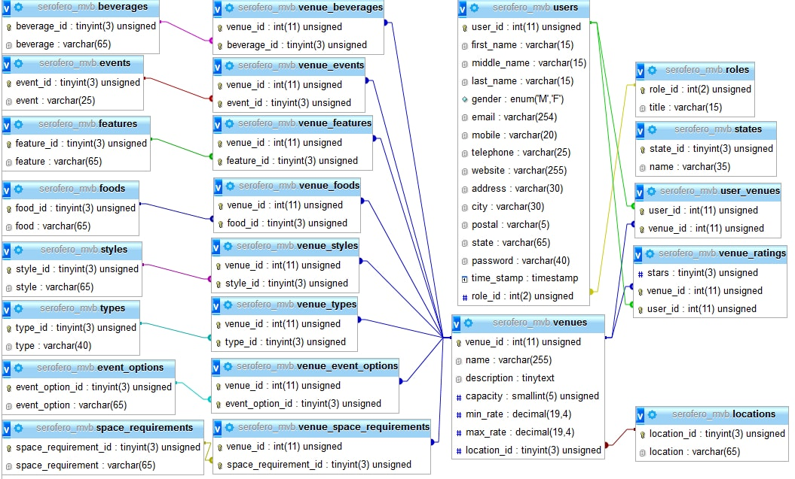
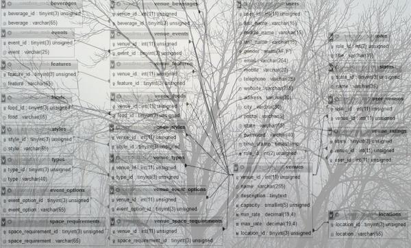
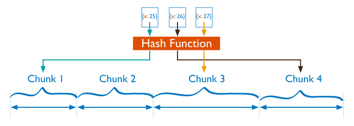

Базы данных
MongoDB
- Frontend
- Backend
- ????
- PROFIT!!!
- Frontend
- Backend
- Database
- PROFIT!!!
CAP теорема
Теорема CAP - эвристическое утверждение о том, что в любой реализации распределённого хранения возможно обеспечить не более двух из трёх следующих свойств: согласованность данных, доступность, устойчивость к разделению.
Cогласованность данных
(англ. consistency) — во всех узлах системы в один момент времени данные не противоречат друг другу
Доступность
(англ. availability) — каждый клиент всегда может читать и писать, если жив хотя бы один узел системы
Устойчивость к разделению
(англ. partition tolerance) — расщепление распределенной системы на несколько изолированных секций не приводит к некорректности отклика каждой из секций
SQL
SQL
NoSQL
| Frontend | Backend | Database |
| Javascript | Javascript | Javascript |
MongoDB
Документо-ориентированная база данных
Данные хранятся в JSON-подобном формате (BSON)
Для запросов используется Javascript
Схема для данных необязательна
Установка
https://www.mongodb.com/download-center#communityБаза данных для приложения "Заметки"
CRUD
- Create
- Read
- Update
- Delete
Create. Одна запись
db.notes.insert({
name: 'Films',
text: 'My films',
owner: 'Наталья'
})
Create. Несколько записей
db.notes.insert([
{
name: 'Заметка без владельца',
text: 'Чья это заметка?'
},
{
name: 1,
owner: 'Наталья'
},
{
some: 'field'
}
])📄 🤷 ❓
Валидация документов в коллекции
db.createCollection("notes", {
validator: {
$jsonSchema: {
bsonType: "object",
required: ["name", "owner"],
properties: {
name: { bsonType: "string", description: "Note title" },
text: { bsonType: "string", description: "Note text" },
owner: {
anyOf: [
{ bsonType: "string" },
{ bsonType: "array", items: { bsonType: "string" } }
],
description: "Name of owner"
}
}}}})Create. Успешное добавление
db.notes.insert(
{ name: 'Films', text: 'My films', owner: 'Наталья' }
)// WriteResult({ "nInserted" : 1 })Create. Дополнительные поля
db.notes.insert({
name: 'Books',
owner: 'Наталья',
version: 2
})// WriteResult({ "nInserted" : 1 })Create. Ошибка валидации
db.notes.insert({ name: 1, owner: 'Наталья' })WriteResult({
"nInserted" : 0,
"writeError" : {
"code" : 121,
"errmsg" : "Document failed validation"
}
})Read. Все документы
db.notes.find(){ "_id" : ObjectId("5ab77143f92855790b23a184"), "name" : "Films", "text" : "my films", "owner" : "Наталья" }
{ "_id" : ObjectId("5ab77159f92855790b23a185"), "name" : "Books", "owner" : "Наталья", "version" : 2 }Read. Pretty
db.notes.find().pretty(){
"_id" : ObjectId("5ab77143f92855790b23a184"),
"name" : "Films",
"text" : "My films",
"owner" : "Наталья"
}
{
"_id" : ObjectId("5ab77159f92855790b23a185"),
"name" : "Books",
"owner" : "Наталья",
"version": 2
}Read. Получение массива
db.notes.find().toArray()[
{
"_id" : ObjectId("5ab77143f92855790b23a184"),
"name" : "Films",
"text" : "my films",
"owner" : "Наталья"
},
{
"_id" : ObjectId("5ab77159f92855790b23a185"),
"name" : "Books",
"owner" : "Наталья",
"version": 2
}
]ObjectId("5ab77143f92855790b23a184")
| 4 байта | timestamp |
| 3 байта | mid |
| 2 байта | pid |
| 3 байта | inc |
Read. Find
db.collection.find(query, projection)- query - задает фильтры для выборки. Если не задан, возвращает все записи коллекции
- projection - задает возвращаемые поля. Если не задан, возвращает все поля
Read. Query
db.notes.find({ name: 'Films' }){
"_id" : ObjectId("5ab77143f92855790b23a184"),
"name" : "Films",
"text" : "My films",
"owner" : "Наталья"
}
Read. Projection
db.notes.find({ owner: 'Наталья' }, { name: 1 }){
"_id" : ObjectId("5ab77143f92855790b23a184"),
"name" : "Films"
}
{
"_id" : ObjectId("5ab77159f92855790b23a185"),
"name" : "Books"
}Read. Projection. Исключение полей
db.notes.find({ owner: 'Наталья' }, { name: 1, _id: 0 }){
"name" : "Films"
}
{
"name" : "Books"
}Read. Операторы
db.notes.find({
version: { $gte: 2 }
})Read. Регулярные выражения
db.notes.find({
text: { $regex: /^my/i}
})db.notes.find({
text: /^my/i
}){
"_id" : ObjectId("5ab77143f92855790b23a184"),
"name" : "Films",
"text" : "My films",
"owner" : "Наталья"
}Read. Поиск по массиву
{
"name" : "Books",
"owner" : "Наталья"
}
{
"name" : "Films for party",
"owner" : [ "Наталья", "Анна" ]
}
{
"name" : "Music",
"owner" : "Вася"
}Read. Поиск по массиву
db.notes.find(
{ owner: 'Наталья' },
{ _id: 0, name: 1, owner: 1 }
){
"name" : "Books",
"owner" : "Наталья"
}
{
"name" : "Films for party",
"owner" : [ "Наталья", "Анна" ]
}Read. Поиск по вложенным документам
db.notes.find({
'score.likes': { $gte: 1 }
}){
name: 'Films',
owner: 'Наталья',
score: {
likes: 10,
dislikes: 2
}
}Read. Sort, skip, limit
db.notes.find({}, { _id: 0, owner: 1, name: 1 }){ "name" : "Music", "owner" : "Вася" }
{ "name" : "Films", "owner" : "Наталья" }
{
"name" : "Films for party",
"owner" : [ "Наталья", "Анна" ]
}
{ "name" : "Books", "owner" : "Наталья" }Read. Sort
db.notes
.find({}, { _id: 0, name: 1, owner: 1 })
.sort({ name: 1 }){ "name" : "Books", "owner" : "Наталья" }
{ "name" : "Films", "owner" : "Наталья" }
{ "name" : "Films for party", "owner" : [ "Наталья", "Анна" ] }
{ "name" : "Music", "owner" : "Вася" }Read. Limit
db.notes
.find({}, { _id: 0, name: 1, owner: 1 })
.limit(2){ "name" : "Films", "owner" : "Наталья" }
{ "name" : "Books", "owner" : "Наталья" }Read. Skip
db.notes
.find({}, { _id: 0, name: 1, owner: 1 })
.skip(2){
"name" : "Films for party",
"owner" : [ "Наталья", "Анна" ]
}
{
"name" : "Music",
"owner" : "Вася"
}Read. Sort-skip-limit
db.notes
.find({}, { _id: 0, name: 1, owner: 1 })
.sort({ name: 1 })
.skip(2)
.limit(1){
"name" : "Films for party",
"owner" : [ "Наталья", "Анна" ]
}Read. Count
db.notes.count({ owner: 'Наталья' }) // 3db.notes.count() // 4Update
db.collection.update(query, update, options)Update. Set
db.notes.update(
{ version: { $exists: false }}, // query
{ $set: { version: 1 }} // update
){ "name" : "Films", "version" : 1 }
{ "name" : "Books", "version" : 2 }
{ "name" : "Films for party" }
{ "name" : "Music" }Update. Multi
db.notes.update(
{ version: { $exists: false }},
{ $set: { version: 1 }},
{ multi: true }
){ "name" : "Films", "version" : 1 }
{ "name" : "Books", "version" : 2 }
{ "name" : "Films for party", "version" : 1 }
{ "name" : "Music", "version" : 1 }Update. Increment
db.notes.update(
{ name: 'Books' },
{ $inc: { version: 1 }}
){ "name" : "Books", "version" : 3 }Update. Push
db.notes.update(
{ name: 'Films for party' },
{ $push: { owner: 'Катя' }}
){
"name" : "Films for party",
"owner" : [ "Наталья", "Анна", "Катя" ]
}Delete
db.collection.remove(query, justOne)db.notes.remove({})db.notes.remove({}, true)Несколько коллекций
db.users.insert({
name: 'Наталья',
notes: ['Films', 'Books', 'Films for party']
})Удаление заметки
db.notes.remove(
{ name: 'Films', owner: 'Наталья' }
)db.users.update(
{ name: 'Наталья' },
{ $pull: { notes: 'Films' }}
)Удаление заметки
db.notes.remove(
{ name: 'Films', owner: 'Наталья' }
)db.users.update(
{ name: 'Наталья' },
{ $pull: { notes: 'Films' }}
)Транзакции
Их нет.
Но будут в MongoDB 4.0
Индексы
db.notes.count() // 1 000 004 db.notes.count({ owner: 'Наталья' }) // 3Индексы. Explain
db.notes
.find({ owner: 'Наталья' })
.explain('executionStats'){
"nReturned" : 3,
"executionTimeMillis" : 389,
"totalKeysExamined" : 0,
"totalDocsExamined" : 1000004,
"executionStages" : {
"stage" : "COLLSCAN",
"filter" : {
"owner" : { "$eq" : "Наталья" }
}
}
}
Создание индекса
db.notes.createIndex({owner: 1})Поиск по индексу
db.notes
.find({ owner: 'Наталья' })
.explain('executionStats'){
"nReturned" : 3,
"executionTimeMillis" : 19,
"totalKeysExamined" : 3,
"totalDocsExamined" : 3,
"executionStages" : {
"stage" : "FETCH",
"inputStage" : {
"stage" : "IXSCAN",
}
}
}
Уникальный индекс. Создание
db.users.createIndex({name: 1}, {unique: true})db.users.insert({name: 'Наталья'})WriteResult({ "nInserted" : 1 })Уникальный индекс
db.users.insert({name: 'Наталья'})WriteResult({
"nInserted" : 0,
"writeError" : {
"code" : 11000,
"errmsg" : "E11000 duplicate key
error collection:
notes-lecture.notes
index: name_1 dup key: { : \"Наталья\" }"
}
})Составной индекс
db.notes.createIndex(
{
'score.likes': -1,
name: 1
}
)Составной индекс. Сортировки
db.notes
.find()
.sort({ 'score.likes': -1, name: 1 })
.explain(){
"inputStage" : {
"stage" : "IXSCAN",
"keyPattern" : {
"score.likes" : -1,
"name" : 1
},
"indexName" : "score.likes_-1_name_1"
}
}
Составной индекс. Сортировки
db.notes
.find()
.sort({ 'score.likes': 1, name: 1 })
.explain(){
"stage" : "SORT",
"sortPattern" : {
"score.likes" : 1,
"name" : 1
},
"inputStage" : {
"stage" : "SORT_KEY_GENERATOR",
"inputStage" : {
"stage" : "COLLSCAN",
"direction" : "forward"
}
}
}
Просмотр существующих индексов
db.notes.getIndexes()[
{
"v" : 2,
"key" : { "_id" : 1 },
"name" : "_id_",
"ns" : "notes-lecture.notes"
},
{
"v" : 2,
"key" : { "owner" : 1 },
"name" : "owner_1",
"ns" : "notes-lecture.notes"
}
]Репликация и шардирование
.gif)
Репликация. Запись и чтение

Репликация. Проверка состояния системы

Репликация. Отказ узла

Шардирование

Шардирование

Шардирование. Range-based

Шардирование. Hash-based
ODM
Object Document MapperMongoose
Установка и подключение
npm install mongooseconst mongoose = require('mongoose');
const URI = 'mongodb://localhost/mongo-lecture';
mongoose.connect(URI).then(
() => { /** ready to use */ },
err => { /** handle initial connection error */ }
)Схемы
const Schema = mongoose.Schema;
const noteSchema = new Schema({
name: { type: String, required: true },
text: String,
owner: { type: [String], required: true }
});Возможности схем
noteSchema.add({
version: { type: Number, default: 1 }
});Типы данных
| String | Number |
| Date | Buffer |
| Boolean | Array |
| ObjectID | Mixed |
Схемы. Индексы
const userSchema = new Schema({
name: {
type: String, index: true, unique: true
},
notes: [String]
});noteSchema.index({ owner: 1, name: 1 });Модели
const Note = mongoose.model('Note', noteSchema);const films = new Note({
name: 'Films',
owner: 'Наталья',
text: 'My films'
});console.log(films.name); // "Films"
console.log(films.owner); // ["Наталья"]
console.log(films.version); // 1
Модели. Виртуальные поля
noteSchema.virtual('nameAndVersion').get(function () {
return `${this.name}, версия ${this.version}`;
});const Note = mongoose.model('Note', noteSchema);
const films = new Note({
name: 'Films',
owner: 'Наталья'
});console.log(films.nameAndVersion); // Films, версия 1CRUD
Create
const books = new Note({
name: 'Books',
owner: 'Наталья'
});books
.save()
.then(function (savedNote) {console.log('Saved')})
.catch(function (err) {console.log('Error:', err)});Read
const query = Note.find({owner: 'Наталья'});query.where({version: {$gte: 2}});
query.select({name: 1, owner: 1});query.exec()
.then(note => { console.log('found note': , note) })
.catch(err => { console.log('error: ', err) });[ { owner: [ 'Наталья' ],
_id: 5ab77159f92855790b23a185,
name: 'Books' } ]Read. Sort, skip, limit
Note
.find({ version: { $gte: 1 }})
.sort({ owner: 1, name: 1 })
.skip(1)
.limit(20)
.select({ owner: 1, name: 1, version: 1 })
.exec();Update
note.update({ $inc: { version: 1 }})Update
Note
.findById(ObjectId("5ab77143f92855790b23a184"))
.then(note => {
note.text += ' new text';
return note.save();
})
.then(saved => {
console.log('saved successfully!', saved);
});Update
Note
.update(
{},
{ $inc: { version: 1 }},
{ multi: true }
)
.then(() => {console.log('updated'})Delete
Note.remove({name: 'Books'})Преимущества MongoDB
- Простота
- Работа с большими объемами данных
- Отсутствие схемы - гибкая модель данных
- Скорость разработки